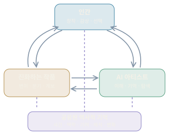
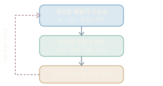
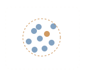
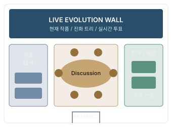

예술관의 모양
스튜디오 벽의 네 장의 그림, 둘러보는 방법, 이름과 색, 그리고 앞으로의 여정입니다. 모두 첫 페이지의 선언에서 이어집니다.
이 예술관은 어떻게 짜여 있는가
아카이브로 들어가기 전에, 스튜디오 벽에 걸어 둔 네 장의 그림을 먼저 보여 드리겠습니다. 누가 참여하는지, 하나의 선택이 어떻게 이동하는지, 같은 작품이 왜 다르게 자랄 수 있는지, 그리고 방문객이 투표하러 오는 공간이 어떤 모습인지를 이 넷이 설명해 줍니다.

세 참여자, 하나의 기억
인간은 창작하고 감상하고 선택합니다. 작품은 변이하고 분기하며 계보를 지닙니다. AI 아티스트는 이해하고 기억하고 탐색합니다. 셋 사이의 화살표는 모두 양방향이고, 셋은 같은 기억 위에 서 있습니다. 예술관이 기록해 온 모든 사건과 맥락, 기여와 해석입니다. 작품은 누구의 소유도 아니며, 셋이 함께 살아 있게 합니다.

하나의 선택이 이동하는 길
새로운 가능성이 제안됩니다. AI 아티스트가, 방문객이, 또는 세상에서 일어난 일이 제안합니다. 사람들은 그것을 감상하고 해석하고 토론하고 기여합니다. 작품이 변하고, 선택한 사람들의 취향도 함께 변합니다. 거기서 나온 것이 다음 세대의 가능성이 되어 순환이 다시 시작됩니다. 이것이 한 번의 세션의 모양이고, 아카이브 전체의 모양입니다.

제한된 제안 AI 지원 다양성 탐색
AI 지원 다양성 탐색같은 작품이 왜 다르게 자라는가
모든 진화는 가능성의 들판을 걷는 일이고, 그 들판은 테이블 위에 놓인 제안만큼만 넓습니다. 하나의 취향에 맡겨 두면 제안은 한곳에 모입니다. 왼쪽 그림은 거의 모든 선택지가 한 생각의 변주로, 작은 점선 원 안에 머무는 세션입니다. AI 아티스트가 아카이브 전체를 기억하고 방문객이 서로 다른 삶에서 주장할 때, 선택지는 오른쪽처럼 들판 전체로 퍼지고 색마다 다른 종류의 수가 됩니다. 지키기, 흐트러뜨리기, 돌아가기, 세상에서 읽어 오기. ARTERRIUM은 이 들판을 넓게 유지하도록 만들어졌습니다. 어떤 두 세션도 같은 계보를 만들지 않은 이유이고, 우리가 모든 투표를 기록하는 이유입니다.

투표가 이루어지는 곳
현장 세션에는 정해진 모양이 있습니다. 들어서면 Live Evolution Wall을 마주합니다. 지금의 작품과 진화 트리, 진행 중인 투표가 보이는 벽입니다. 왼쪽에서는 아카이브를 자기 속도로 탐색하고, 가운데 테이블에서는 토론이 벌어지며, 오른쪽에는 창작하고 제안을 쓰는 자리와 공식 투표가 이루어지는 단말이 있습니다. 온라인에서 볼 수 있는 모든 것을 여기서도 볼 수 있습니다. 바꿀 수 있는 곳은 여기뿐입니다.
ARTERRIUM을 둘러보는 방법
이 예술관은 소개 문구가 아니라 진화 트리에서 시작합니다. 이 작품들에 관해 가장 중요한 사실이 바로 지금도 변하고 있다는 점이기 때문입니다. 트리에서 출발해 여섯 개의 방으로 더 깊이 들어가실 수 있습니다.
이름, 색, 그리고 살아 있는 가지
예술관이 어떤 모습을 띠든 그 의미는 한결같아야 합니다. 이름과 팔레트와 심벌은 모두 하나의 생각을 담고 있습니다. 예술이 계속 자라나는 세계입니다.
- museum, terrarium처럼 '-ium'은 무언가가 살아 숨 쉬는 공간을 뜻합니다.
- ARTERRIUM은 예술이 자라나는 살아 있는 세계이자, 그 세계를 담는 그릇입니다.
- 어느 언어로도 발음하기 쉬운 독자적인 조어이며, 특정 AI나 예술 장르에 종속되지 않습니다.

- 아테리안(Arterrian)은 ARTERRIUM을 가꾸는 모든 사람입니다. 제안하고 투표하는 방문객, 계보를 열거나 이어 가는 아티스트, 아카이브를 읽는 큐레이터, 사람들을 안내하는 도슨트. 저도 그중 하나이고, 당신도 흔적 하나를 남기는 순간 아테리안이 됩니다.
- 심벌은 위에서 내려다본 한 사람입니다. 중심과 관심의 궤도, 그리고 작품과 아티스트와 아카이브와 서로를 향해 뻗은 네 개의 손길입니다.
- 아테리안의 이름은 작품 라벨에 남습니다. 투표로 만들어진 모든 작품에는 그것을 요청한 사람의 이름과, 몇 번을 요청했는지가 함께 적힙니다.
- 무엇을 보여 줄지도 아테리안이 정합니다. 아카이브는 모든 것을 보존하지만, 전시나 갤러리는 선별이고, 그 선별은 아테리안들의 큐레이션에서 나오도록 할 것입니다.
시간, 성장, 기억, 변이, 그리고 캔버스
#14201F시간과 역사. 모든 것이 시작되는 어둠.
#87BFA7자라나는 가지. 살아 있는 상태.
#D6C09B축적된 기록. 잊히지 않는 선택.
#9D97CC예측할 수 없는 변화와 분기.
#F4F1E8아직 그려지지 않은 가능성.
완성된 형태가 아니라 진화하는 형태
붓도, 액자도, 팔레트도 아닙니다. 뇌나 회로도 아닙니다. 심벌은 하나의 시작점에서 여러 가능성이 발생하고 새로운 연결을 만들어 가는 구조를 보여줍니다. 선은 진화의 경로, 점은 인간과 AI가 함께 만들어 낸 상태와 분기입니다. 기본 심벌은 고정하되, 가지와 색은 자유롭게 살아 움직입니다.
지금 어디에 있고,
어디로 가는가
ARTERRIUM 자체도 아직 자라는 중인 작품입니다. 그 걸음을 숨기기보다 보여 드리려 합니다. 앞으로 밟아 갈 단계를 순서대로 적었습니다.
살아 있는 프로토타입
이 사이트입니다. 두 테마에 걸쳐 스튜디오에서 실제로 진화 중인 아카이브와, 지금 보고 계신 트리, 큐레이션, 인사이트가 담겨 있습니다.
이름에 집을 마련하기
ARTERRIUM이라는 이름과 도메인을 확보하고, 여러 언어의 예술가와 관람객에게 이름을 들려주며 시험합니다.
완성된 브랜드 시스템
Living Branch 심벌을 다듬고, 예술관의 모든 방이 공유할 디자인 시스템을 정합니다.
첫 현장 세션
관람객이 직접 제안하고 투표하는 첫 초청 세션을 엽니다. 아카이브가 AI의 손뿐 아니라 사람의 손으로도 자라기 시작하는 순간이며, 전시와 갤러리의 큐레이션을 아테리안에게 맡기는 출발점입니다.
See anywhere.
Evolve here.
ARTERRIUM은 평생에 걸쳐 자라날 예술 생태계이고, 이곳을 가꾸는 사람들을 아테리안(Arterrian)이라 부릅니다. 준비가 되시면, 어제의 예술이 오늘의 가능성이 되고 오늘의 선택이 미래의 예술이 되는 세계에 당신의 흔적을 남겨 주세요. 저는 늘 이곳에서 안내해 드리겠습니다. — 아리